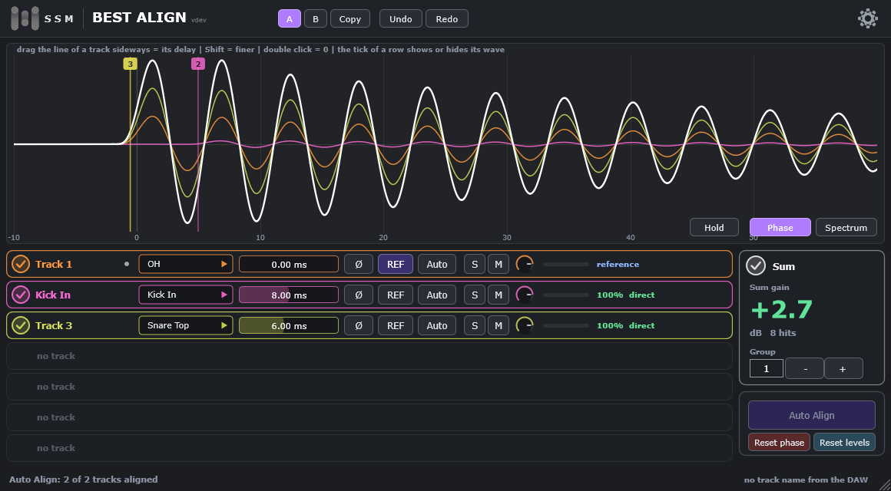

1. О плагине
Best Align 3 выравнивает по фазе микрофоны живой ударной установки, записанные на разные дорожки. Вы ставите по одной копии плагина на каждую дорожку барабанов. Копии находят друг друга и работают как одна группа.
- Показывает фазу группы: волну каждой дорожки, их сумму и число Sum gain.
- Ставит задержку (целые сэмплы, до 50 мс) и полярность на каждой дорожке — вручную или кнопкой Auto Align.
- Любой дорожкой можно управлять из окна любой копии плагина.
- Вид Spectrum показывает, где дорожки складываются, а где гасят друг друга.
- На каждой дорожке есть Solo, Mute и ручка уровня; Undo и A/B работают на всю группу.

В плагине нет сэмплов и собственного звука: звук каждой дорожки проходит через него, задержанный на заданную вами величину.
2. Установка
- Закройте DAW.
- Запустите установщик. Он положит
Best Align 3.vst3в папкуC:\Program Files\Common Files\VST3. - Запустите DAW и дайте ей просканировать новые плагины. Найдите Best Align 3 (производитель SSM-Audio) среди эффектов.
Чтобы удалить плагин, используйте «Приложения» в параметрах Windows (или деинсталлятор) либо удалите папку Best Align 3.vst3.
3. Пробный период и лицензия
При первом запуске плагин предлагает пробный период 14 дней: один на каждый компьютер. После него нужен лицензионный ключ из нашего магазина. Ключ работает на одном компьютере одновременно; чтобы перенести его, откройте окно лицензии и нажмите «Deactivate this computer», затем активируйте на другом компьютере. Для запуска пробного периода и активации нужен интернет; потом плагин работает и без него, а лицензию проверяет заново при каждом запуске и примерно раз в 12 часов.
Ваш звук никуда не отправляется. Подробности — в лицензионном соглашении.
4. Быстрый старт
- Поставьте Best Align 3 на каждую дорожку с микрофоном барабанов (бочка, малый, томы, оверхеды, комнатные), первым в цепочке, до любых плагинов, которые добавляют задержку.
- Номер Group оставьте 1 на всех. Копии с одинаковым номером работают вместе.
- Проверьте роль каждой дорожки в её строке (Kick In, Snare Top, OH …). Плагин угадывает её по названию дорожки в DAW; роль можно выбрать из списка.
- Проиграйте барабаны из DAW примерно 8 секунд подряд. Когда всё готово, кнопка Auto Align загорается.
- Нажмите Auto Align. В каждой строке видно, что найдено. Sum gain растёт, когда дорожки согласованы.
- Послушайте. Если одну дорожку нужно подправить, потяните её линию в виде Phase или введите задержку (раздел 6).
5. Окно плагина
| Часть | Что делает |
|---|---|
| Шапка | A / B / Copy: две настройки всей группы для сравнения. Undo / Redo: последние 20 шагов. Шестерёнка: настройки (раздел 10). |
| Phase | Бас каждой дорожки вокруг одного удара после её задержки и полярности — ровно то, что играют плагины. Один цвет на дорожку; белая волна — сумма. Когда дорожки в фазе, сумма выше любой из них. У каждой дорожки есть вертикальная линия с ручкой сверху. |
| Spectrum | Сумма дорожек против суммы их мощностей (тонкая серая линия). Где оранжевая кривая выше серой, дорожки помогают друг другу; где ниже — гасят (гребенчатый фильтр). Кнопки сверху: Speed, Mode (Energy / RMS), Slope, Bands; стрелки двигают картинку; Reset. |
| Hold | Останавливает картинку, чтобы её рассмотреть. |
| Строка дорожки | Круглая галка (показать или скрыть волну этой дорожки в Phase и Spectrum), название из DAW, роль, задержка, полярность Ø, REF, кнопка полосы, S, M, ручка уровня, индикатор уровня и то, что нашёл Auto Align. |
| Sum | Галка (показать или скрыть белую волну) и крупное Sum gain в дБ по последним ударам. +3 дБ: два одинаковых сигнала складываются идеально. 0 дБ: дорожки не помогают друг другу. Ниже 0: гасят. Здесь же номер Group. |
| Auto Align, Reset phase, Reset levels | См. разделы 7 и 8. |
Если дорожек больше семи, высота окна не меняется, а список строк прокручивается (колесо мыши или полоса прокрутки). Окно можно масштабировать уголком справа внизу (двойной клик — 100 %) или в меню настроек.
6. Фаза вручную
- Потяните линию дорожки в виде Phase вбок. Задержка меняется прямо при перетаскивании, волна и сумма следуют за ней. Shift — в десять раз точнее. Двойной клик по линии — задержка 0.
- Окошко задержки в строке: тяните его или крутите колесо мыши (0,05 мс за щелчок; Shift — один сэмпл), двойной клик — 0, правый клик — ввод числа: миллисекунды (
2.3) или сэмплы с буквой s после числа (110s). Øпереворачивает полярность дорожки.REFделает дорожку эталоном. Эталон никогда не задерживается больше, чем нужно остальным; обычно это оверхеды.
Задержка — от 0 до 50 мс целыми сэмплами. Изменение сглаживается за 5 мс, поэтому щелчков нет.
7. Auto Align
Auto Align слушает последние 8 секунд каждой дорожки и ставит задержку и полярность каждой относительно эталона. Нужны минимум две дорожки и удары в эталоне.
- Эталон — дорожка с кнопкой
REF; если её нет, то оверхеды, затем комнатный микрофон, затем первая дорожка. - Кнопка полосы дорожки выбирает, где смотреть фазу: Auto (по роли: бас для бочки и томов, весь звук для остальных), Bass или Full.
- Результат каждой дорожки виден в её строке: N% direct (найдено по её собственным ударам), with its drum (найдено через другие микрофоны той же бочки или малого), follows its drum, reference, left as it is (мало данных: ничего не менялось).
- Нижняя строка говорит, сколько дорожек выровнено. Undo возвращает прежние настройки.
8. Solo, Mute и уровень
Работают на выходе дорожки, как в микшере. Фаза, Sum gain и Auto Align от них не зависят: группа всегда слышит дорожку такой, какой она записана.
SSolo: пока у какой-то дорожки группы включено Solo, остальные молчат. Правый клик поS: Solo только у этой дорожки.MMute. Правый клик поM: заглушена только эта дорожка.- Ручка: от -60 до +12 дБ. Тянуть, колесо, двойной клик — 0 дБ, правый клик — ввод числа.
- Reset phase: все задержки 0, полярность не перевёрнута. Reset levels: все уровни 0 дБ, без Mute и Solo. Каждая кнопка не трогает то, что сбрасывает другая.
9. Группы, роли, Undo
- Group (от 1 до 8): копии с одинаковым номером работают вместе. Для одной установки нужна одна группа. Второй номер — для второй, независимой установки в том же проекте.
- Роль: Kick In, Kick Out, Kick Sub, Snare Top, Snare Bottom, Tom 1–3, Hi-Hat, OH (оверхеды), Room, Other. Роль следует за названием дорожки, пока вы не выберете её сами. Роль любой дорожки можно выбрать из окна любой копии.
- Undo / Redo хранят последние 20 шагов: задержки, полярность, полосу, эталон, Solo, Mute и уровни. A / B — две настройки всей группы; Copy копирует включённую на другую.
10. Настройки
Шестерёнка в шапке: масштаб окна (70–200 %), подсказки вкл/выкл, индикаторы уровня вкл/выкл, быстрый старт и About. Настройки общие для всех копий плагина.
11. Заметки о DAW
- Плагин намеренно не сообщает задержку (latency) DAW: иначе DAW сама отменила бы выравнивание. Какую задержку вы поставили, такую вы и слышите.
- Ставьте плагин первым на дорожке. Плагин перед ним, меняющий время, изменит то, что он слышит.
- Копии должны быть в одном проекте и играть вместе. Они обмениваются звуком внутри вашего компьютера, через общую между ними память.
- Когда DAW остановлена, остаётся последняя картинка, а линии по-прежнему следуют за поставленными вами задержками. Для Auto Align DAW должна играть.
- Проверено в REAPER. Другие DAW с VST3 (Studio One, Cubase, Ableton, FL Studio, Bitwig, Reason) проверяются.
12. Если что-то не так
| Проблема | Что делать |
|---|---|
| Вид Phase пуст, строка без дорожки | Проиграйте дорожки из DAW. Минимум две копии одной группы должны стоять на играющих дорожках. |
| Auto Align остаётся тёмным | Играйте 8 секунд подряд без прыжка (петля короче слишком коротка). В эталоне должны быть удары. |
| Строка говорит «left as it is» | Плагин не нашёл достаточно ударов, которые слышит и эталон. Выберите полосу (Bass или Full) или поставьте эту дорожку вручную. |
| Две установки перемешались | Дайте второй установке другой номер Group. |
| Плагин не появился в DAW | Пересканируйте плагины. Файл должен лежать в C:\Program Files\Common Files\VST3. |
| Установщик не может заменить файл | Он открыт в DAW. Закройте DAW полностью и установите снова. |
13. Правовая информация
Best Align 3 лицензируется, а не продаётся. См. лицензионное соглашение (EULA), которое идёт с установщиком. © 2026 SSM-Audio. VST — торговая марка Steinberg Media Technologies GmbH. Плагин использует фреймворк JUCE (© Raw Material Software Limited).